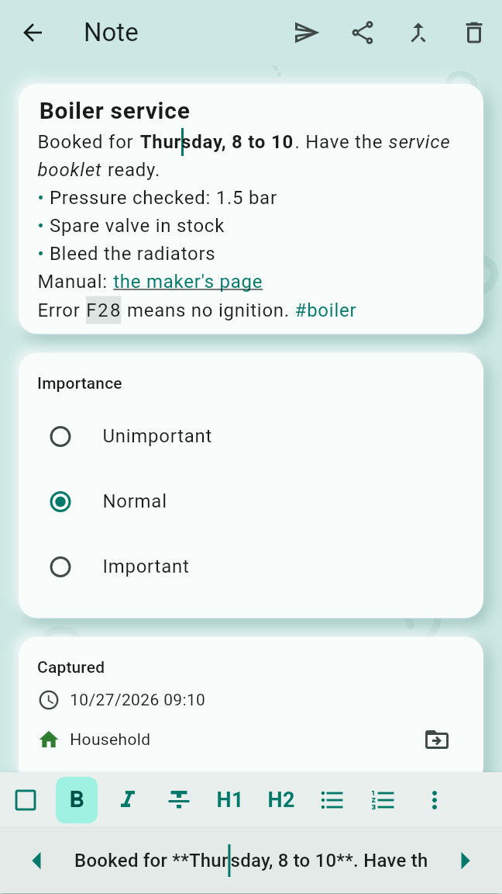
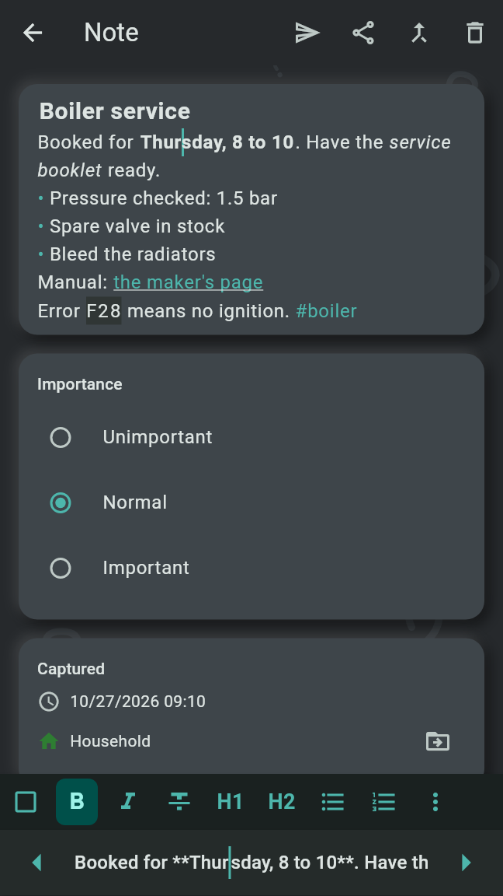
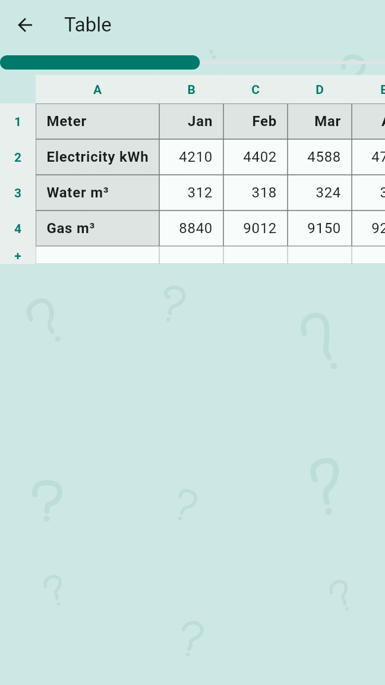
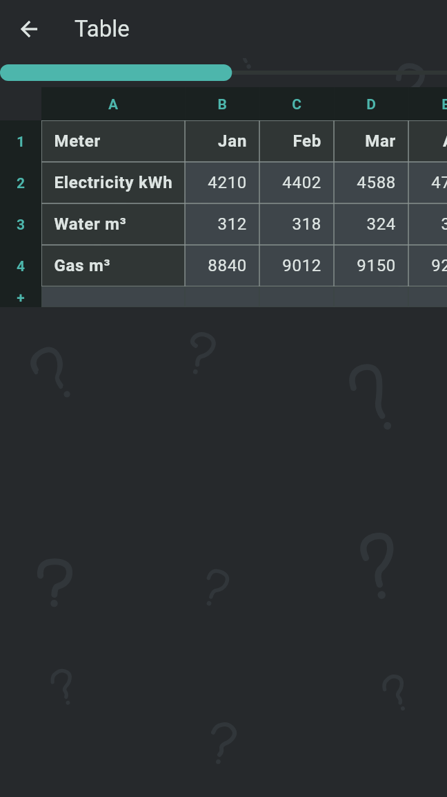

A Note's text can be formatted, hold status marks, #tags and tables. Voice recordings get a Transcript and photos a Photo Text, both written on the Device; the search finds Notes by all of them.
The text of a Note and of a Section can be bold, italic or struck through, have two heading levels, bulleted and numbered lists one level in, quotes, links, inline code and tables. It is kept as Markdown, exactly as written. A text stays plain until it is first formatted, and stays formatted from then on: by a button of the format bar, by a format typed as Markdown, or by pasting a text that uses one. Cards, Sections, Sent Items and Backups show it formatted. A Device with Old Brain Fix 0.1 shows the Markdown and cannot change it.
On the phone, the format bar sits on the keyboard while the Note editor or Add to Note has it open. Its buttons, in this order:
The buttons that find no room go into ⋮ at the end of the bar, More formats, which opens at the finger. Bold, italic, strike-through and code work on the selection, or on the word at the cursor when nothing is selected; the line formats work on every line the selection touches. A button shows highlighted while the cursor is in its format, and a second tap takes the format off again.
With Type in two rows on, the default in Settings under "Typing", the top row shows the text formatted, its Markdown marks left out, and the row above the keyboard shows the Markdown of the cursor's line, with ◀ and ▶ to move the cursor. With it off, the field shows the marks dimmed.


A format typed as Markdown takes effect as it is typed:
# for a large heading, ## for a small one, -, * or + for a bulleted item, 1. for a numbered item and > for a quote.**bold**, *italic* or _italic_, ~~struck~~, `code` and [label](address).
Every line break shows as one, so lines typed one under the other stay apart. An item indented by
two spaces or more is one level in; deeper items show one level in. Numbered items that follow one
another count on, so 1. on every line shows 1, 2, 3. Deeper headings
(###), code blocks, images and other Markdown show as written.
On a capture screen there is no format bar, but a text typed or pasted with Markdown is saved as a formatted text.
Link asks for the "Web or e-mail address", the one there already filled in; Set link puts it on the selection or the word at the cursor. Leave it empty to remove the link. An address typed without "https://" is taken as a web address, or as an e-mail address when it holds an "@". A tap on a link on a card opens it in the browser or the mail app. Only web and e-mail addresses open; any other link, which may come from another person in a Shared Area, stays text.
In the text, a table is drawn as a grid, made smaller to fit the width, its header row in bold. A tap on it opens it full screen. Table in the format bar opens the table the cursor is in; elsewhere it puts a new table at the cursor, two empty columns with a header row and one more row, on lines of their own, and opens it with its first cell being edited.
Tables are written as GFM tables: each edit writes the whole table anew, every row as
| a | b |, and leaves the words in its cells as they were. A line typed right under a
table, without a blank line between, becomes a row of it. Markdown tables pasted in become
tables. Where you may only read the Note, the table opens to read.


A ☐, ✅ or ❌ at the start of a line is a status mark: open, checked or failed, such as "✅ v2 supported at the customer". A tap on it opens a menu at the finger with Check, Fail and Open, the current state left out, and the choice changes the character in the text. This is an edit of the Note's text like any other, synced to every Device.
-, * or +, with a space after it, so "- ☐ milk" counts. After a number ("1. ☐") or in a quote it does not; nor does a mark in the middle of a line, nor other boxes and ticks such as ☑ or ✓.A word with "#" in front, such as "#garden", is a tag and is drawn in the accent colour, on cards, in Sections and in the editor. A tap on it on a card, in a Section or in a table opens the search of all Notes with the tag as written. Nothing is stored for a tag, and there is no list of tags; it is a word of the text.
A voice recording gets a Transcript: the words recognised in it, kept next to the recording. Whisper writes it on the Device, in English or German, whichever the recording sounds more like, in the background and one recording at a time once the Note is saved; recordings captured before the speech model was there follow. While it runs, "Transcribing…" shows under the recording; a recording without speech shows "No words heard.". The recording is always kept.
Whisper is led in with your Area and Topic names; for German speech also with the English words German is full of and the app's words, such as Unsorted, Routine and Agenda, so that they are written as they are spelt. Where Whisper only repeats that lead-in, the repeat is taken out of the Transcript.
Transcripts need a speech model, downloaded once. The phone offers it after the first start (see Getting started); Settings, Speech model offers it on the phone and the desktop at any time. Under "Model":
Choosing a model downloads it, with its progress and Cancel. Only the chosen model is kept: the one before is deleted once the new one is in place. Each download comes only from Old Brain Fix's own release on GitHub and is checked against a fixed checksum before it is used; a download that broke off or did not match keeps nothing and says so. Use a file of my own takes whisper.cpp's multilingual ggml-base.bin or ggml-small.bin from the Device; any other file is rejected.
A photo or a picture gets a Photo Text: the text recognised in it, kept next to the photo. RustO reads it on the Device with PaddleOCR's PP-OCRv6 Tiny models, which are part of the app, so nothing is downloaded and nothing leaves the Device. It reads German letters (ä, ö, ü, ß) and €, and keeps the lines as they are laid out on the photo, so a price stays on the line of its item. A strongly curved page can lose some of its lines. Photos are read in the background, one at a time, once the Note is saved; capturing never waits for it.
On a full card, Transcripts and Photo Texts show dimmed under the word "Transcript" or "Photo Text"; a compact card shows their first three lines.
Only the app writes a Transcript or Photo Text; it cannot be edited. In the Note editor, under each Transcript and Photo Text, also those of a merged Note's Section:
Remove recording, keep text and Remove photo, keep text, in the editor and in the card's ⋮, do the opposite for a recording or photo that has a text: the file goes from all your Devices and from everyone you share the Note's Area with, and the text stays on the Note. In a Shared Area a Member does all of this only on their own Notes.
The notes browser has a search field on every level: "Search all Notes" on the Areas list, "Search this Area" and "Search this Topic" below it. The search finds what is typed in any case, in a Note's text and its Sections, its Transcripts and Photo Texts, the text lines of its Tally's entries and the Lines of its Checklist or Shopping List. A formatted text is searched as it reads: "bold" finds "**bold**", and the Markdown marks are found nowhere. A removed Transcript or Photo Text is no longer found.